|
В. И. ЕЛИСЕЕВ ВВЕДЕНИЕ В МЕТОДЫ ТЕОРИИ
ФУНКЦИЙ ПРОСТРАНСТВЕННОГО КОМПЛЕКСНОГО ПЕРЕМЕННОГО |
|
5.1. Соответствие между периодическим законом элементов и формированием циклонных вихрей в ядерной материи
Формирование структуры пространства, заложенное в аппарате комплексной пространственной алгебры и развитого на ее основе пространственного комплексного анализа, сопоставим с формированием ядер периодической таблицы элементов.
В настоящее время ясно, что периодичность расположения элементов в таблице Д.И. Менделеева вызвана не только изменением структуры электронных оболочек, но и, в первую очередь, происходящими изменениями в ядрах элементов, связанными с ростом заряда z атомного ядра.
Вопрос следует ставить более остро: конфигурация электронных оболочек атома целиком зависит от структуры атомного ядра. Теоретическая физика отошла от такой постановки и рассматривает ядро как потенциал, обладающий определенным зарядом, и не более того.
Согласно проведенным исследованиям выдвигаем гипотезу циклонной модели атомного ядра. От ядер легких элементов до ядер тяжелых элементов идет периодическое формирование энергетических циклонных вихрей в ядре, которые и определяют структуру ядер. Согласно аппарату ТФПКП (теории функции пространственного комплексного переменного) количество циклонных вихрей в пространстве фиксируется количеством e -туннелей в n-мерном пространстве. Таким образом, утверждается, что размерность пространства определяет его структуру и наоборот и что периодическая таблица Д.И. Менделеева реализовывается в пространстве определенного количества измерений, которое будет установлено.
Следуя аппарату по выделению e -туннелей в пространстве, продемонстрированному в главе 4-й, можно утверждать, что n-мерное комплексное пространство имеет количество туннелей, соответствующее числу сочетаний 2 из n-размерности пространства.
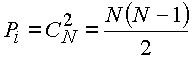.
Проведем сопоставление числа намерений N с числом сочетаний
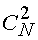 и зарядом z ядра:| N=1 | C=0 | Z=0 | нейтрон |
| N=2 | C=1 | Z=1 | протон |
| N=3 | C=3 | Z=3 | литий |
| N=4 | C=6 | Z=6 | углерод |
| N=5 | C=10 | Z=10 | неон |
Ядром элемента неона Ne
10 заканчивается второй ряд периодической системы элементов. С позиции циклонной модели заканчивается формирование первого циклонного вихря в ядерной материи. Величины 1,3,6 соответствуют формированию конфигурациям электронных оболочек основных состояний атома, которые также повторяются с незначительным отклонением при формировании циклонных вихрей многонуклонных ядер.Для сопоставления в табл. 1 даны электронные конфигурации основных состояний атома до элемента ксенона.
Периодическая система элементов Д.И. Менделеева представлена на рис. 52.
Схема формирования циклонных ядерных вихрей на протяжении всей периодической таблицы элементов представлена на рис. 53.
Далее имеем:
| N=6 | C=15 | Z=15 | фосфор P15 |
Электронная оболочка заполняется предельно до 14 электронов ввиду того, что ядерный циклонный вихрь способен удержать 15 зарядов:
| N=7 | C=21 | Z=21 | скандий P21 |
Можно утверждать, что электронная оболочка сверхтяжелых элементов предельно будет заполнена до 20 - 21 электрона.
Между этими числами находится число 18, которое определяет заряд ядра аргона. В ядре аргона сформировано два циклонных вихря, удерживающих по 9 зарядов каждый.
Ядром аргона A
18 заканчивается третий период периодической системы, циклонные вихри ядра скандия удерживают 10 и 11 зарядов каждый:| N=8 | С=28 | Z=28 | никель Ni23 |
Закончился первый ряд четвертого периода. Сформировался третий циклонный вихрь:
| N=9 | С=36 | Z=36 | криптон Kr36 |
Закончился второй ряд 4-го периода. Сформировался четвертый циклонный вихрь, удерживающий 36 протонов -по 9 протонов каждый:
| N=10 | С=45 | Z=45 | родий Rh45 |
Первый ряд 5-го периода замыкает ядро элемента палладия. Заряд ядра палладия на единицу выше. Естественно, что количество зарядов, удерживаемых в ядре циклонными вихрями, может отличаться от зарядов предельных ядер периодов системы элементов, но не более чем на единицу.
Ядрами элементов Rh
45 закончилось формирование пятого циклонного вихря в ядерной материи:| N=1 | С=55 | Z=55 | цезий Сz55 |
Второй ряд 5-го периода заканчивается в системе ядром ксенона с зарядом Хe
54.Поэтому считаем, что элементами ксенона и цезия сформирован в их ядрах шестой ствол и шесть циклонных вихрей:
| N=12 | C=66 | Z=66 | диспрозий Du66 |
| N=13 | C=78 | Z=78 | платина Pt78 |
Диспрозий принадлежит лантаноидам, которые располагаются в первом ряду шестого периода. Заканчивается период ядром платины, что и дает расчет.
Далее имеем:
| N=14 | C=91 | Z=91 | протактиний Pa91 |
| N=15 | C=105 | Z=105 | EKA-TA |
Заряд Z=105 закрывает таблицу элементов (см. рис. 52, рис. 53). Периодичность формирования e -туннелей в ядрах элементов колебалась на протяжении всей таблицы от 9-10 единиц заряда.
К концу таблицы все энергетические e -туннели насыщаются энергией, так что каждый из них удерживает по 9 протонов. Вся периодическая система имеет, следовательно,
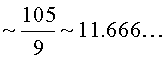
e -туннелей.
Здесь необходимо отметить первое подтверждение выдвинутой гипотезы, что e -туннель есть заряд пространства определенного уровня.
Известно, что если составить единицу заряда из скорости света 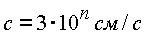, гравитационной постоянной 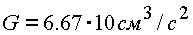 и постоянной Планка
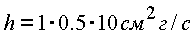, то получим 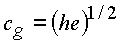, которое не зависит от G и в 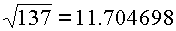 раз больше элементарного заряда.
Постоянная тонкой структуры
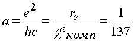,
где
e- заряд электрона; 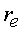 —классический радиус электрона; 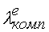- комптоновская длина волны электрона.Таким образом, величина заряда
e, составленная из фундаментальных постоянных, соответствует количеству циклонных вихрей в полностью сформированной ядерной матери. В каждом e -туннеле циклонного ядерного вихря содержится квадрат e -туннелей циклонных вихрей электронных оболочек атома. Таким образом, доказано, что ядерные циклонные вихри диктуют формирование электронных оболочек.Таблицу можно продолжить и получить следующий ряд:
| N=16 | C=120 | Z=120 |
| N= 17 | C=136 | Z=136 |
| N=18 | C=153 | Z=153 |
| N=19 | C=171 | Z=171 |
и так далее:
Элементы с зарядами 120, 136. 153, 171 могут претендовать на устойчивые ядерные образования ядер сверхтяжелых элементов. Значения их близки к предсказываемым в теории [10].
Количественное совладение величины сочетаний из N-размерности комплекса с величинами зарядов элементов, закрывающих или открывающих периоды периодической таблицы Д. И. Менделеева, подтверждают выдвинутую гипотезу циклонной модели атомного ядра.
Периодичность, с которой формируются циклонные ядерные вихри, соответствует периодичности формирования рядов таблицы в 9-10 единиц заряда. Со всей определенностью можно сказать, что новый период или новая строчка в периоде отражает структурное изменение, происшедшее в ядре.
Элементы Ne
10, Ar18, Ni28, Kr36, Xe54 формируют первый блок циклонных вихрей. Шесть циклонных вихрей (рис. 53) ядер Хe54 закрывают этот блок.Далее идет формирование второго блока и седьмого, e -туннеля; циклонного вихря до элемента диспрозия Du
66. Ядра лантаноидов имеют до 8 туннелей. Два e -туннеля второго блока при полном своем формировании становятся устойчивыми. В процессе формирования они неустойчивы и стремятся вернуться к устойчивому блоку из 6 туннелей.Экспериментальные данные подтверждают этот вывод. Начиная с ядра
Nd60 до ядра Du66 имеем a-распадные процессы. a-радиактивность лантаноидов заканчивается на ядре элемента гафния Hf72. Это говорит о том, что в ядре сформировано 8 циклонных вихрей по 9 зарядов в каждом: 6 в первом блоке и 2 во втором. Лантаноиды обладают одинаковыми химическими свойствами и занимают одну клетку в системе (рис. 52). Изложенные исследования говорят о том, что химические свойства лантаноидов определяют 7-8-неустойчивые e -туннели циклонных вихрей второго блока.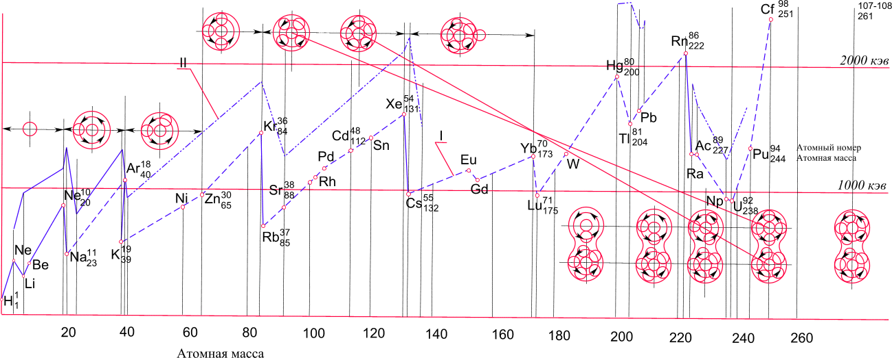
Рис. 53. Схема формирования циклонных вихрей в ядрах атома периодической системы элементов. Ломаная кривая соотвествует энергии связи электрона на последней орбите с ядром.
Оба блока образуют между собой перемычку (рис. 53). Ядро урана U92 имеет 11 циклонных вихрей. При распаде ядро делится на блок из шести туннелей и блок из четырех туннелей. Один из туннелей распадается и вместе с ним распадается один циклонный вихрь, образуя осколки деления. Это соответствует схеме распада по массам как 4:6 = 2:3 с образованием двух крупных осколков типа ядер ксенона и стронция Хe54, Sr38 первый имеет шесть e -туннелей, второй - четыре.
Вся периодическая таблица формирует два блока по шесть циклонных вихрей. В результате блоки становятся устойчивыми и независимыми друг от друга, что приводит к их спонтанному делению.
Схема из рис. 53 сопровождается кривой ионизационного потенциала последнего электрона атома. Кривая резко падает вниз при появлении нового циклонного e -туннеля в ядре и растет вверх по мере заполнения его энергией до насыщения по мере увеличения заряда ядра. Это еще одно убедительное доказательство выдвинутой гипотезы. Так как в исследовании таблица элементов выступает как экспериментальное подтверждение выдвинутой
гипотезы, основанной на циклонном вихревом характере формирования структуры пространства, как следствие ТФПКП, то следует заключение: законы периодического формирования циклонных вихрей присущи N-мерному пространству. Пространство в своем развитии непрерывно формирует циклонную структуру, которая при своем насыщении способна спонтанно делиться. В этом смысле нельзя пространство и материю стянуть в точку до образования черной дыры. Этот вывод получен и в РТГ А. А. Логуновым [8].Мини оглавление:
[0], [1.1.1, 1.1.2, 1.1.3, 1.1.4, 1.1.5, 1.1.6, 1.1.7, 1.1.8, 1.2, 1.2.1, 1.2.2, 1.2.2.a, 1.2.2.b, 1.2.2.c, 1.2.2.d, 1.2.2.e, 1.2.2.f, 1.2.2.g, 1.2.2.h, 1.2.3, 1.3.1, 1.3.2, 1.3.3, 1.3.4, 1.3.5, 1.3.6, 1.4.1, 1.4.2, 1.5, 1.6, 1.7.1, 1.7.2, 1.7.3.1, 1.7.3.2, 1.7.3.3, 1.7.4.1, 1.7.4.2, 1.8.1], [2.1, 2.2],[3.1, 3.2, 3.3, 3.4.1, 3.4.2, 3.4.3, 3.4.4, 3.4.5],[4.1, 4.2, 4.3, 4.4],[5.1, 5.1.Рис.52, 5.2, 5.3, 5.4, 5.4.Т1, 5.4.Т2, 5.4.Т3, 5.5.1, 5.5.2, 5.5.3, 5.5.4],[6.1.1, 6.1.2, 6.2.1, 6.2.2, 6.2.3, 6.2.4, 6.2.5, 6.3, 6.4.1, 6.4.2, 6.5.1, 6.5.2],[7.1, 7.2, 7.3, 7.4, 7.5, 7.6, 7.7.1, 7.7.2, 7.8.1, 7.8.2, 7.8.3, 7.9],[8.1, 8.2.1, 8.2.2, 8.3, 8.4, 8.5, 8.6, 8.6.T1, 8.7, 8.8.1, 8.8.2, 8.8.3, 8.9.1, 8.9.2, 8.9.3, 8.10, 8.10.T2, 8.10.T3],[9.1, 9.2, 9.3, Рис.88, 89, 90, 91, 92, 93, 94, 95, 96, 97, 98, 99, 100],[10.1, 10.2, 10.3, 10.4, 10.5, 10.6, 10.7, 10.8, 10.9, 10.10, 10.11, 10.12, 10.13, 10.14, 10.15.1, 10.15.2, 10.16.1, 10.16.2, 10.17, 10.18],[11]
Размещенный материал является электронной версией книги: © В.И.Елисеев, "Введение в методы теории функций пространственного комплексного переменного", изданной Центром научно-технического творчества молодежи Алгоритм. - М.:, НИАТ. - 1990. Шифр Д7-90/83308. в каталоге Государственной публичной научно-технической библиотеки. Сайт действует с 10 августа 1998.
E-mail: mathsru@gmail.com